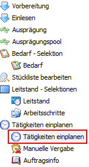
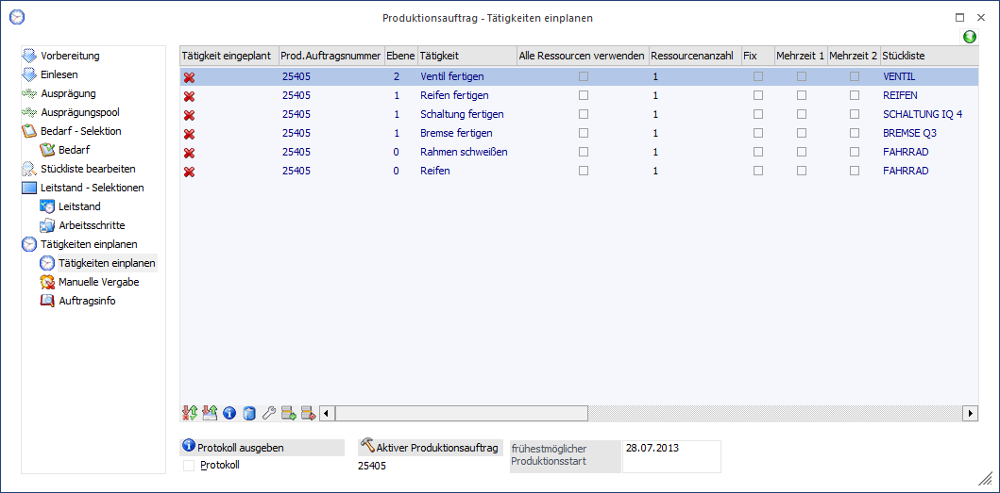
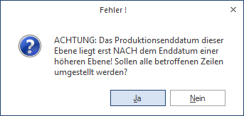
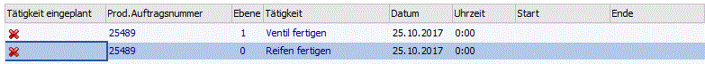
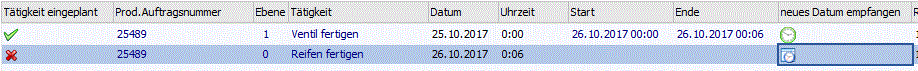
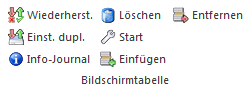
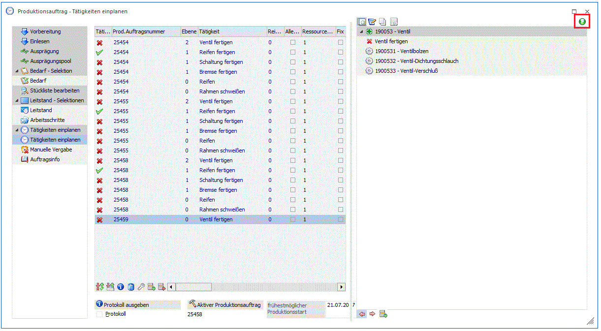
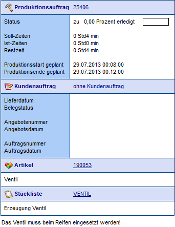
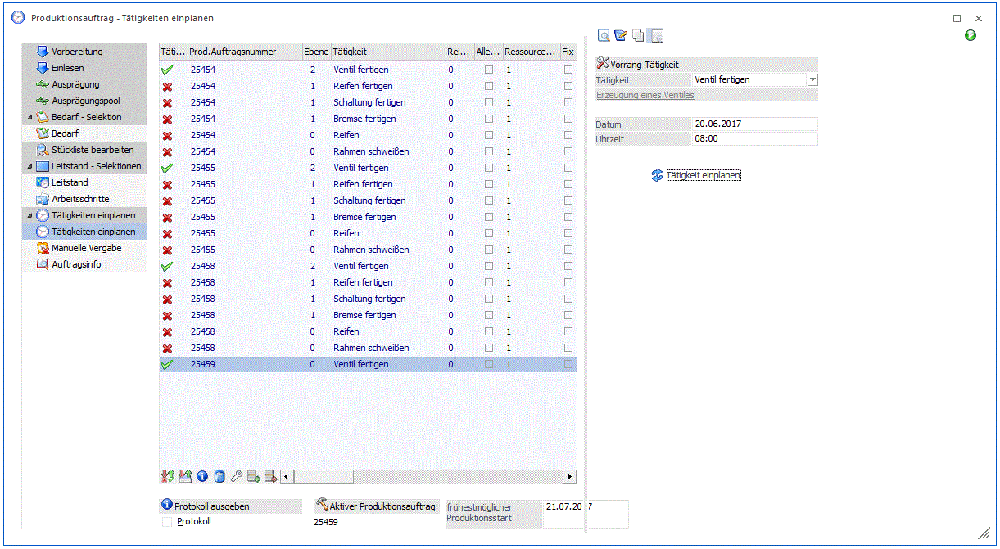
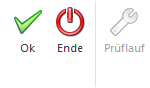

Der Bereich "Produktionsauftrag - Tätigkeiten einplanen" kann über verschiedene Wege aufgerufen werden:
ü Der Bildschirm wird automatisch bei der Anlage eines neuen Produktionsauftrags geöffnet. Die Anlage eines Auftrags kann dabei über die "Produktionsvorbereitung", das Erfassen eines Produktionsauftrags aus der Belegerfassung von WinLine FAKT heraus oder über das "Produktionsauftrag einlesen" geschehen.
Voraussetzung
In der Stückliste des Produktionsartikels oder in einer der Komponentenstücklisten ist eine Tätigkeit hinterlegt.
Hinweis
Wenn der Produktionsauftrag direkt aus der Belegerfassung von WinLine FAKT erstellt wird, dann kann das Öffnen des Bildschirms durch die Option "Tätigkeitenfenster nicht öffnen" unterbunden werden. Diese Option ist in den FAKT-Parametern (WinLine Start - Parameter - Applikations-Parameter - FAKT-Parameter - Belege - Stücklisten - Option "Tätigkeitenfenster nicht öffnen") zu finden.
ü Der Bildschirm kann über den Leitstand (WinLine PPS - Produktion - Leitstand / Recalc) oder die Produktionskorrektur (WinLine PPS - Produktion - Produktionskorrektur) geöffnet werden. Hierzu wird nach dem Starten des jeweiligen Programms im Auswahlbaum der Punkt "Tätigkeiten einplanen" auswählt.


Im Bereich "Produktionsauftrag - Tätigkeiten einplanen" werden die Tätigkeiten der Produktionsaufträge aufgelistet. Diese Tätigkeiten können dabei in der Tabelle abgeändert bzw. ergänzt werden.
Durch die Einplanung selber werden die Ressourcen, welche in den Tätigkeiten hinterlegt sind, automatisch reserviert (verplant) und stehen anderen Produktionsaufträgen für diesen Zeitraum nicht mehr zur Verfügung.
Hinweis
Wenn die "Tätigkeiten einplanen" aus dem Leitstand aufrufen wird, wird die Tabelle immer aufgrund der Priorität des Produktionsauftrags gefüllt, d.h. von oben (höchste Priorität) nach unten (niedrigste Priorität).
Hinweis
Wenn die Ressourcen weiterhin verfügbar bleiben sollen, dann kann dieses über die Option "Ressource bleibt verfügbar" (WinLine PPS - Stammdaten - Tätigkeiten) gesteuert werden.
Während des Einplanens werden auch mögliche Konflikte aufgezeigt. Ein Konflikt kann z.B. entstehen, wenn eine benötigte Ressource nicht ausreichend vorhanden ist und so eine zeitgerechte Ausführung des Auftrags unmöglich wird.
Hinweis
Mögliche Konflikte können durch Änderungen im Bereich "Tätigkeiten einplanen" oder in der "Manuellen Vergabe" gelöst werden (nähere Informationen siehe Abschnitt "Konfliktlösung").
Hinweis
Abgeschlossene Produktionsaufträge bzw. Produktions-Simulationen können nicht in diesem Fenster bearbeitet werden. Wenn im Leitstand-Selektionen abgeschlossene Produktionsaufträge bzw. Simulationen für die Ausgabe im Leitstand selektiert werden, und diese Aufträge beim Wechsel im Bereich "Tätigkeiten einplanen" selektiert sind, erscheint eine Meldung, dass keine Daten für die Auswertung vorhanden sind.
Tabelle
Ø Tätigkeit eingeplant
An dieser Stelle wird durch ein Symbol gekennzeichnet, ob die Tätigkeit bereits eingeplant ist oder nicht.
ü - Dieses Symbol wird dann angezeigt, wenn die Tätigkeit (also die hinterlegten Ressourcen) noch nicht für diesen Produktionsauftrag reserviert wurde.
ü - Dieses Symbol wird dann angezeigt, wenn die Tätigkeit (also die hinterlegten Ressourcen) für den Produktionsauftrag bereits reserviert wurde.
ü - Dieses Symbol wird dann angezeigt, wenn schon erfasste IST-Zeiten für die Tätigkeiten vorliegen
ü - Dieses Symbol wird dann angezeigt, wenn Bearbeitungsmodus "1 Fix (gesamter Auftrag)" bei der Tätigkeit hinterlegt ist. In diesem Fall kann die Tätigkeit mit Button "Wiederherstellen" nicht ausgeplant werden.
Die automatische Einplanung aller angezeigten Tätigkeiten erfolgt über den Button "Ok" bzw. die F5-Taste. Wenn nur eine Tätigkeit eingeplant werden soll, dann kann dieses per Doppelklick in der entsprechenden Tätigkeitenzeile auf das Symbol erfolgen.
Hinweis
Wenn während der Einplanung ein Symbol auf stehen bleibt, dann gibt es einen Konflikt. Nach der Lösung des Konflikts (nähere Informationen siehe Abschnitt "Konfliktlösung") kann eine Einplanung erneut vorgenommen werden.
Ø Prod. Auftragsnummer
An dieser Stelle wird die Produktionsauftragsnummer angezeigt.
Ø Ebene
An dieser Stelle wird die Stücklistenebene angezeigt, in welcher sich die Tätigkeit befindet. Dabei stellt die Ebene 0 die Stücklistenebene des Produktionsartikels selber da.
Hinweis
Bei einem Doppelklick auf die Ebene wird die Auswertung "Produktionsinformation" am Bildschirm ausgegeben. In dieser werden nur die Komponenten des gewählten Arbeitsschritts angezeigt.
Sollten für den Arbeitsschritt bereits Tätigkeiten eingeplant worden sein, dann werden außerdem die entsprechenden Ressourcen ausgewiesen.
Ø Tätigkeit
Die Spalte "Tätigkeit" ist 2x vorhanden. In einer Spalte wird dabei der Kurzcode und der anderen die vollständige Bezeichnung der Tätigkeit dargestellt.
Hinweis
In der Spalte mit dem Kurzcode wird bei einem Doppelklick auf die Tätigkeit der Tätigkeitenstamm geöffnet.
Ø Alle Ressourcen
Die Aktivierung dieser Checkbox reserviert für diese Tätigkeit alle verfügbaren Ressourcen.
Hinweis
Grundsätzlich plant das Programm die Ressource(n) für die gesamte Zeit im Kalenderschema (z.B. in einer Tagesschicht). D.h. die erste Ressource in der Gruppe wird zuerst für den ganzen Tag bzw. Kalenderschicht eingeplant, und wenn noch Restzeit übrig ist, wird die nächste Ressource jedenfalls für den Tag bzw. der Kalenderschicht einplant, usw.
Beispiel
Für eine Tätigkeit, die 1 Stunde dauert, wird 1 Mitarbeiter aus der Ressourcengruppe "Facharbeiter" 40 Stunden benötigt. In der Kalenderschicht stehen 8 Stunden zur Verfügung. In der Ressourcengruppe "Facharbeiter" sind 5 Facharbeiter definiert. Ist die Checkbox aktiviert und die Facharbeiter noch nicht anderweitig verplant, dann werden alle 5 Mitarbeiter für je 8 Stunden am gleichen Tag bzw. in der gleichen Kalenderschicht reserviert.
Vorteil
Der Vorteil dieser Reservierungsmethode ist, dass der Produktionsauftrag in der kürzest möglichen Zeit realisiert wird.
Nachteil
Der Nachteil dieser Reservierungsmethode ist, dass in dieser Zeit keine anderen Tätigkeiten durchgeführt werden können, welche die gleichen Ressourcen benötigten, da alle Ressourcen bereits in Verwendung sind. Dadurch kann es geschehen, dass in anderen Produktionsaufträgen ein Stillstand eintritt und sich die Fertigstellung verzögert.
Ø Ressourcenanzahl
Ist die Option "Alle Ressourcen" nicht aktiviert, dann kann an dieser Stelle eingegeben werden, wie viele gleichartige Ressourcen maximal verwendet werden sollen.
Beispiel
Es stehen 5 Montageplätze zur Verfügung. Der Produktionsauftrag soll aber nicht extrem aufgesplittet werden, sondern es sollen maximal 2 Plätze für den Auftrag genutzt werden. Die maximale Ressourcenanzahl ist daher 2.Vorteil
Es stehen noch weiterhin Ressourcen zur Verfügung, um andere Produktionsaufträge bedienen zu können. Außerdem wird durch eine nicht allzu große Aufteilung die Übersicht über den Nachschub und die entsprechende Logistik einfacher und effektiver.
Nachteil
Die Tätigkeit bzw. der Produktionsauftrag wird nicht in der kürzest möglichen Zeit realisiert.
Hinweis
Die Anzahl der Ressourcen kann automatisch bei der Vorbereitung eines Produktionsauftrags anhand des hinterlegten Faktors für die "Optimale Auslastung" im Tätigkeitenstamm, Reiter "Optimale Auslastung" vorbelegt werden. Die optimale Auslastung kann hinzu für jede Kostenvariante der Tätigkeit eigens eingestellt werden. Wenn die Kostenvariante manuell in "Tätigkeiten einplanen" geändert wird, wird die Anzahl der Ressourcen allerdings nicht automatisch anhand des Faktors für die Optimale Auslastung aus dem Tätigkeitenstamm angepasst.
Ø Fix
Diese Option kann im Zusammenhang mit der "Ressourcenanzahl" verwendet werden. Die Aktivierung bewirkt, dass immer die ersten X Ressourcen verwendet werden.
Beispiel
Es stehen 5 Montageplätze zur Verfügung. Die Option "Fix" ist aktiviert und die "Ressourcenanzahl" wurde auf 3 festgelegt.
Wenn nun die Tätigkeit eingeplant werden soll, dann wird nach einem Zeitpunkt gesucht, an dem die Montageplätze 1 bis 3 frei sind. Die Montageplätze 4 und 5 werden vom Programm nicht automatisch verwendet.
Diese Option wird z.B. gewählt, wenn bestimmt Ressourcen immer in Reserve bleiben sollen bzw. eine unbefriedigende Qualität aufweisen und daher nur im Notfall genutzt werden sollen.
Vorteil
Es werden die am besten geeigneten Ressourcen genutzt.
Nachteil
Bis die gewünschten Ressourcen zur Verfügung stehen, kann unter Umständen ein längerer Zeitraum vergehen in welchem der Produktionsauftrag nicht fortgeführt werden kann.
Ø Mehrzeit 1
Mit dieser Option kann gesteuert werden, ob für die Ressourcenplanung auch die im Kalender definierte Mehrzeit 1 verwendet werden soll oder nicht.
Ø Mehrzeit 2
Mit dieser Option kann gesteuert werden, ob für die Ressourcenplanung auch die im Kalender definierte Mehrzeit 2 verwendet werden soll oder nicht.
Ø Stückliste
An dieser Stelle wird die Stücklisten angezeigt, in welcher sich die Tätigkeit befindet.
Hinweis
Bei einem Doppelklick die Stückliste wird automatisch der Stücklistenstamm geöffnet.
Ø Originalmenge
An dieser Stelle wird zu produzierende Originalmenge angezeigt.
Ø Restmenge zu produzieren
An dieser Stelle wird die noch zu produzierende Restmenge angezeigt.
Hinweis
Restmenge und Originalmenge können abweichend voneinander sein, wenn für den Produktionsauftrag bereits eine Teilendmeldung durchgeführt wurde.
Ø Restzeit
Vor der Einplanung der Tätigkeit wird an dieser Stelle wird die benötigte Gesamtzeit dargestellt. Sollte anschließend bei der Einplanung ein Konflikt auftreten und die Tätigkeit kann an dem gewünschten Termin nicht komplett eingeplant werden, dann wird angezeigt, wie viel Zeit nicht reserviert werden konnte. Dieses tritt vor allem bei dem Produktionstyp "0 - Zielproduktion" auf.
Ø Datum
Zeigt je nach Produktionstyp das Datum an, zu dem die Tätigkeit fertiggestellt werden muss (Zielproduktion) oder gestartet werden soll (Startproduktion).
Hinweis
Das Datum kann vor der Einplanung der Tätigkeit geändert werden, um z.B. Konflikte zu umgehen bzw. zu beheben.
Achtung
Im Normalfall werden die Tätigkeiten aus den unteren Stücklistenebenen zuerst durchgeführt. Sollte es durch eine Datumsänderung zu einer Änderung dieser Logik kommen, dann wird folgender Hinweis angezeigt.

Ø Uhrzeit
Ab dieser Uhrzeit wird begonnen die Einplanung der Tätigkeiten vorzunehmen.
Hinweis
Die Uhrzeit kann vor der Einplanung der Tätigkeit geändert werden, um z.B. Konflikte zu umgehen bzw. zu beheben.
Achtung
Im Normalfall werden die Tätigkeiten aus den unteren Stücklistenebenen zuerst durchgeführt. Sollte es durch eine Uhrzeitenänderung zu einer Änderung dieser Logik kommen, dann wird folgender Hinweis angezeigt.
Ø Start
Nach der Einplanung wird hier das Startdatum mit Uhrzeit für die Tätigkeit angezeigt.
Ø Ende
Nach der Einplanung wird hier das Enddatum mit Uhrzeit für die Tätigkeit angezeigt.
Ø neues Datum empfangen
Wenn die Tätigkeiten einzeln eingeplant werden sollen, dann kann dieses per Doppelklick auf das Symbol in der Spalte "Tätigkeit einplanen" erfolgen.
Um bei dieser Art der Reservierung eine bessere Übersicht zu erhalten, wird an dieser Stelle in Form von Symbolen angezeigt, ob sich durch die Einplanung einer Tätigkeit das "Datum" oder die "Uhrzeit" dieser Tätigkeitenzeile automatisch geändert hat.
ü - Die Tätigkeit hat ein neues "Datum" bzw. eine neue "Uhrzeit" erhalten.
ü - Bei der Tätigkeit wurden keine Änderungen vorgenommen.
ü - Eine Tätigkeit in einer übergeordneten Stücklistenebene hat ein neues Datum erhalten, d.h. "vererbt".
Hinweis
Durch einen Doppelklick auf das Symbol in dieser Spalte wird eine Meldung mit einem Hinweistext bzgl. des Datums-Veränderungsstatus ausgegeben.
Beispiel
Um einen Reifen zu fertigen muss zuerst ein Ventil produziert werden. Vor der Einplanung der Tätigkeit "Ventil fertigen" stehen beide Tätigkeiten auf dem Datum 25.10.2017 mit der Uhrzeit 0:00Uhr.

Per Doppelklick auf das in der Zeile der Ventilfertigung findet die erste Reservierung statt. Der frühestmögliche Zeitpunkt zur Herstellung ist der 25.10.2017 von 0:00 bis 0:06 Uhr.
Da der Reife erst nach der Herstellung des Ventils produziert werden kann, wird das Datum und die Uhrzeit bei der Tätigkeit "Reifen fertigen" automatisch aktualisiert und diese Änderung mit dem Symbol verdeutlicht.

Ø Einfügen
Wenn eine neue Tätigkeit eingefügt wird, dann kann mit Hilfe einer Auswahlliste die Reihenfolge (siehe Feld "Reihenfolge") definiert werden. Zur Auswahl stehen folgende Varianten:
ü 0 - egal
Die eingefügte
Tätigkeit erhält die Reihenfolge der nachfolgenden Tätigkeit.
ü 1 - vor
Die eingefügte
Tätigkeit erhält die Reihenfolge der nachfolgenden Tätigkeit und die
Reihenfolgenummern der folgenden Tätigkeiten erhöhen sich entsprechend.
ü 2 - nach
Die eingefügte
Tätigkeit wird unterhalb der nachfolgenden Tätigkeit geschoben und erhält eine
höhere Reihenfolge.
Ø Kostenvariante
Es kann in diesem Feld eine der möglichen drei im Tätigkeitenstamm hinterlegten Kostenvarianten ausgewählt werden.
Ø Menge Feingeplant / Menge Grobgeplant
Wenn mit der Kapazitätsplanung gearbeitet wird, dann ist an dieser Stelle zu entnehmen, mit wieviel Ressourcen eigentlich (Grobgeplant) und tatsächlich (Feingeplant) gearbeitet wird.
Ø Reihenfolge
Hier wird die Reihenfolge angezeigt, in welcher die Tätigkeiten reserviert werden sollen. Diese Reihenfolge wird in der Stückliste definiert.
Ø Stapelnummer
Ø Die Stapelnummer des Produktionsauftrages wird in dieser Spalte angezeigt. Die Stapelnummer kann hier nicht editiert werden.
Ø Bearbeitungsmodus
Ø Über diese Spalte kann bestimmt werden, ob die Tätigkeit mit Button "Wiederherstellen" ausgeplant werden. Es stehen zwei Selektionsoptionen zur Auswahl:
Ø
ü 0 - Automatik
Wenn diese
Selektionsoption bei der Tätigkeit hinterlegt ist, wird die Tätigkeit beim Klick
auf Button "Wiederherstellen" ausgeplant.
ü 1 - Fix (gesamter Auftrag)
Wenn
diese Selektionsoption bei der Tätigkeit hinterlegt ist (kann nur bei einer
eingeplanten Tätigkeit eingestellt werden), ist die Tätigkeit beim
"Wiederherstellen" ausgenommen.
Hinweis
Bei Auswahl von dieser Selektionsoption für eine Tätigkeit von einem Produktionsauftrag wird die Auswahl bei allen Tätigkeiten des Auftrags automatisch hinterlegt.
Tabellenbuttons

Ø Wiederherst.
Es werden alle eingeplanten Tätigkeiten zurückgesetzt, so dass diese wieder ungeplant sind bzw. wenn schon erfasste IST-Zeiten für die Tätigkeit vorhanden sind. Tätigkeiten mit ein Bearbeitungsmodus "1 Fix (gesamter Auftrag) sind vom Wiederherstellen ausgenommen.
Hinweis
Bei Wiederherstellen von eingeplanten Tätigkeiten werden Tätigkeiten ignoriert, wofür bereits IST-Zeiten erfasst wurden. Diese nicht berücksichtigten Tätigkeiten werden mit Symbol gekennzeichnet.
Beim erneuten Einplanen werden diese Zeiten erneut nicht berücksichtigt (das Symbol bleibt bestehen).
Die SOLL-Zeiten für eine solche Tätigkeit können nur neu eingeplant werden, indem man entweder die SOLL-Zeiten in der "Manuellen Vergabe" heraus löscht oder indem man in der "Manuellen Vergabe" bei diesen Tätigkeiten die Checkbox deaktiviert und erneut speichert.
Sollte es keine SOLL-Zeiten geben, dann wird diese Tätigkeit beim neuen einplanen auch erneut eingeplant (unabhängig davon, was es für IST-Zeiten gibt).
Alle SOLL- bzw. IST-Zeiten werden in der "Manuellen Vergabe" ebenfalls optisch anhand von zwei Spalten als IST-Zeit oder SOLL-Zeit gekennzeichnet.
Achtung
Individuelle Datums- oder Uhrzeiteneinstellungen gehen hierbei verloren (werden wieder auf den Standard gesetzt).
Ø Einst. dupl.
Mit dem Button "Einstellungen duplizieren" können die Einstellungen, die in der aktuellen Zeile getroffen worden sind, auf die darunter liegenden Zeilen desselben Produktionsauftrags dupliziert werden (z.B. Alle Ressourcen verwenden, Ressourcenanzahl, Fix usw.).
Ø Info-Journal
Durch Drücken dieses Buttons wird die Auswertung "Produktionsinformation" am Bildschirm ausgegeben. In dieser werden sämtliche Arbeitsschritte und Komponenten des gerade gewählten Produktionsauftrags angezeigt.
Sollten für den Auftrag bereits Tätigkeiten eingeplant worden sein, dann werden außerdem die entsprechenden Ressourcen ausgewiesen.
Hinweis
Dieselbe Liste kann auch erzeugt werden, wenn auf die Felder der Tabelle ein Doppelklick gesetzt wird. Eine Ausnahme bilden dabei nur die Felder der Spalten "Tätigkeiten einplanen", "Ebene", "Tätigkeit" und "Stückliste".
Ø Löschen
Der gerade gewählte Produktionsauftrag wird nach einer Sicherheitsabfrage gelöscht.
Ø Start
Durch Drücken dieses Buttons wird der Produktionstyp des Auftrags von "0 - Zielproduktion" auf "1 - Startproduktion" umgestellt. Als neues Herstellungsdatum wird dabei das Tagesdatum + 1 Tag gesetzt (da der aktuelle Tag bereits begonnen hat).
Hinweis
Der Button ist nur anwählbar, wenn es sich um einen Produktionsauftrag mit Zielproduktion handelt.
Ø Einfügen
Durch Auswahl dieses Buttons kann oberhalb der aktiven Tätigkeit eine weitere Tätigkeit eingefügt werden.
Achtung
Dieses ist nur möglich, wenn die aktive Tätigkeit noch nicht eingeplant wurde.
Ø Entfernen
Durch Auswahl dieses Buttons kann die aktive Tätigkeit entfernt werden.
Achtung
Dieses ist nicht möglich, wenn die zu entfernende Tätigkeit bereits eingeplant wurde.
Einstellungen/Info
Ø Protokoll ausgeben
Ist diese Checkbox aktiv wird am Bildschirm die Auswertung "Reservierungs-Fehlerprotokoll" ausgegeben, wenn Tätigkeiten eingeplant werden.
Auf dem Protokoll selber wird detailliert aufgelistet, welche Ressource zu welchem Zeitpunkt eingeplant wurde und aus welchem Grund ggfs. nicht reserviert werden konnte.
Ø Aktivierter Produktionsauftrag
Hier wird der Produktionsauftrag angezeigt, das gerade bearbeitet wird.
Ø frühestmöglicher Produktionsstart
Hier kann das Datum eingegeben werden, mit dem mit den Reservierungen der Tätigkeiten begonnen werden soll.
Hinweis
Wenn an dieser Stelle der aktuelle Tag angegeben wird, dann kann dieses zu Reservierungen führen, welche in der Vergangenheit liegen (es ist bereits 14:35Uhr, die Reservierung erfolgt aber für 10:12Uhr).
Info-Bereich
Ø Produktionsauftrags-Infobereich anzeigen/ausblenden
Im oberen rechten Bereich der Tabelle kann mit diesen Buttons ein Info-Bereich für den aktuell selektierten Produktionsauftrag angezeigt bzw. ausgeblendet werden.

Der Info-Bereich untergliedert sich in 3 Bereiche.
Ø Stücklistenanzeige
In diesem Bereich wird die gesamte Stückliste des zu produzierenden Artikels in Form einer Baumstruktur dargestellt. Dabei werden innerhalb des Baums unterschiedliche Symbole angezeigt:
ü Die Tätigkeit hätte normalerweise ein neues "Datum" bzw. eine neue "Uhrzeit" erhalten, aber das aktuelle Datum ist bereits "höher" und wurde somit nicht überschrieben.
ü Dieses Symbol zeigt an, dass es sich um einen Produktionsartikel handelt (Halbfertig- oder Fertigprodukt), wobei zumindest eine hinterlegte Tätigkeit noch nicht eingeplant wurde (ggfs. auch erst in darunter liegenden Stücklisten).
ü Dieses Symbol zeigt an, dass es sich um eine noch nicht eingeplante Tätigkeit handelt.
Hinweis
Bereits eingeplante Tätigkeiten werden in dem Stücklistenbaum nicht mehr dargestellt.
ü Dieses Symbol zeigt an, dass es sich um einen Produktionsartikel handelt (Halbfertig- oder Fertigprodukt), wobei alle hinterlegten Tätigkeiten bereits eingeplant sind.
ü Dieses Symbol wird bei benötigten Komponenten dargestellt.
Außerdem gibt es in der Stücklistenanzeige folgende Buttons:
ü Durch Drücken dieses Buttons werden alle Ebenen des Stücklistenbaums geschlossen.
ü Durch Drücken dieses Buttons werden alle Ebenen des Stücklistenbaumes geöffnet.
ü Durch Drücken dieses Buttons wird eine neue Tätigkeit eingefügt.
Achtung
Dieses ist nur möglich, wenn zuvor innerhalb des Baums eine noch nicht eingeplante Tätigkeit angewählt wurde.
Ø erweiterte Informationen
In diesem Bereich werden detaillierte Informationen zu der gerade angewählten Tätigkeit angezeigt.

Ø Terminverschiebung
In diesem Bereich können die Termine für die Fertigstellung von Produktionsaufträge geändert werden.
Achtung
Die angebotenen Programmpunkte in diesem Bereich können nur im "Leitstand" genutzt werden (nähere Informationen siehe Kapitel "Leitstand").
Ø Tätigkeiten bevorzugen
In diesem Bereich kann eine Tätigkeit selektiert werden, die über mehrere Produktionsaufträge gesondert eingeplant werden kann.

Ø Tätigkeit
In diesem Selektionsfeld wird die Tätigkeit selektiert, die bei den verschiedenen Produktionsaufträgen eingeplant werden soll. Der Bereich wird auch durch Button "Tätigkeiten bevorzugen" geöffnet.
Ø Datum / Uhrzeit
Das Programm plant alle Vorkommnisse der Tätigkeit bei den angezeigten Produktionsaufträgen anhand des Datums bzw. der Uhrzeit ein (d.h. entweder "ab Datum/Uhrzeit" bei Startproduktion oder "bis Datum/Uhrzeit" bei Zielproduktion).
Ø Button "Tätigkeiten einplanen"
Durch Drücken dieses Buttons wird die selektierte Tätigkeit bei allen in der Tabelle angezeigten Produktionsaufträgen eingeplant.
Achtung
Es können nicht Tätigkeiten von Typ "Startproduktion" als auch "Zielproduktion" gleichzeitig mit der Funktion bearbeitet werden. Rüstzeiten werden wie eingestellt berücksichtigt.
Das Programm plant die Tätigkeiten für alle angezeigten Produktionsaufträge möglichst aneinandergereiht, d.h. möglichst durchgehend. Es gelten allerdings die "normalen" Bedingungen beim Einplanen. D.h. wenn eine Ressource durch eine andere Tätigkeit ausgelastet ist, werden Tätigkeiten dementsprechend unter Berücksichtigung der bestehende Ressourcen-Reservierung eingeplant. In diesem Sinne kann eine lückenlos durchgehende Einplanung nicht in allen Situationen gewährleistet sein.
Buttons

Ø Ok
Durch Drücken dieses Buttons werden für alle in der Tabelle aufgeführten und noch nicht eingeplanten Tätigkeiten die Einplanung / Reservierung vorgenommen.
Sollten einzelne Tätigkeiten nicht eingeplant werden können, dann bleibt in der jeweiligen Zeile in der Spalte "Tätigkeit einplanen" das bestehen. Bei erfolgreicher Reservierung wird dort ein angezeigt.
Hinweis
Sobald der Konflikt gelöst wurde (nähere Informationen siehe Abschnitt "Konfliktlösung") kann durch nochmaliges Drücken des OK-Buttons die Einplanung erneut gestartet werden.
Ø Ende
Der Programmbereich wird verlassen.
Ø Tätigkeiten bevorzugen
Durch Drücken dieses Buttons wird Info-Bereich "Tätigkeiten bevorzugen" im Info-Bereich geöffnet.
Konfliktlösung
Wenn eine Tätigkeit nicht eingeplant werden kann gibt es einen Konflikt. Solche Konflikte können auf verschiedene Art und Weise gelöst werden:
ü Erhöhung der "Ressourcenzahl" die reserviert werden soll. Dies Hinterlegung erfolgt direkt im Programm "Produktionsauftrag - Tätigkeiten einplanen".
ü Verwendung "Alle Ressource verwenden" durch Aktivierung der entsprechenden Checkbox. Diese erfolgt direkt im Programm "Produktionsauftrag - Tätigkeiten einplanen".
ü Erhöhung der Ressourcenzahl die verfügbar ist, z.B. durch Zukauf, Miete, etc. Diese Aufnahme muss in dem "Ressourcenstamm" vorgenommen werden.
ü Verwendung von der "Mehrzeit 1" bzw. "Mehrzeit 2" durch Aktivierung der entsprechenden Checkbox. Dieses erfolgt direkt im Programm "Produktionsauftrag - Tätigkeiten einplanen".
ü Durch Veränderung des Produktionsdatums. Dieses erfolgt direkt im Programm "Produktionsauftrag - Tätigkeiten einplanen".
ü Durch die Verschiebung anderer Produktionsaufträge. Dieses kann im Programm "Leitstand" erfolgen.
ü Durch die Splittung des Produktionsauftrags. Dieses kann im Programm "Produktionsauftrag splitten" geschehen.
ü Wenn es sich um einen Produktionsauftrag mit dem Produktionstyp "Zielproduktion" handelt durch die Wandlung in eine "Startproduktion".
ü Durch die Vergabe einer anderen Ressource im Bereich "Manuelle Vergabe" (nähere Informationen siehe Kapitel "Manuelle Vergabe").